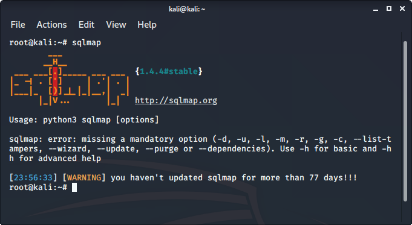

sqlmap est l’un des meilleurs outils pour effectuer des attaques par injection SQL. Il automatise simplement le processus de test d’un paramètre pour l’injection SQL et automatise même le processus d’exploitation du paramètre vulnérable. C’est un excellent outil car il détecte la base de données par lui-même, nous n’avons donc qu’à fournir une URL pour vérifier si le paramètre de l’URL est vulnérable ou non, nous pourrions même utiliser le fichier demandé pour vérifier les paramètres POST.
